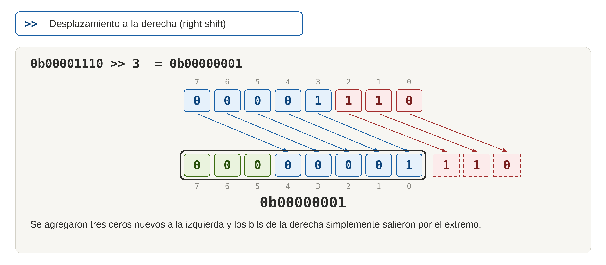
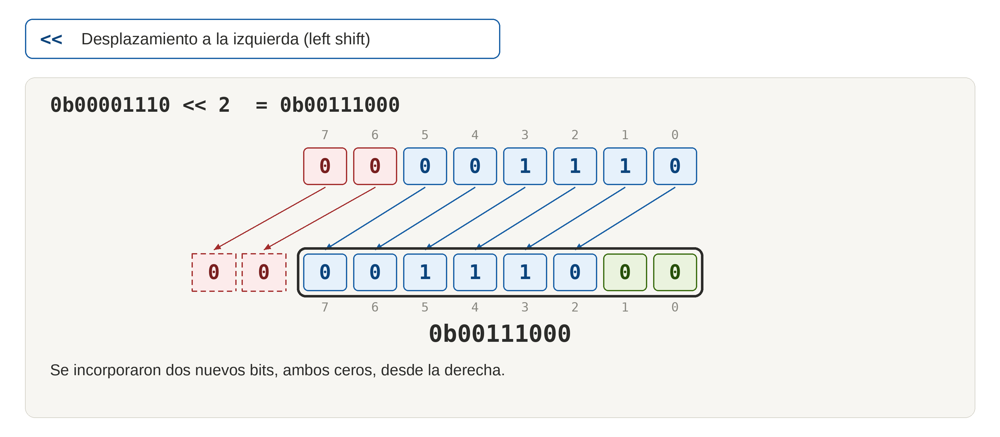
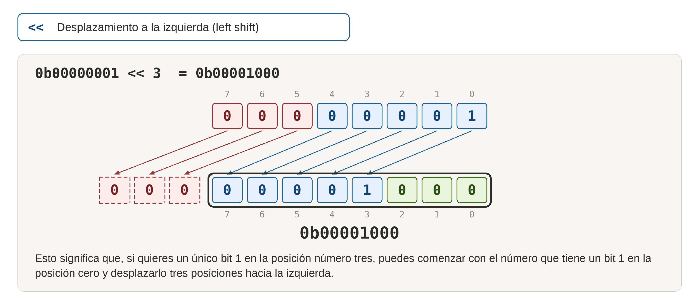

OPERADORES LÓGICOS A NIVEL DE BITS
INTRODUCCIÓN
Aunque hayas programado en C durante mucho tiempo, es posible que no hayas trabajado demasiado con manipulaciones a nivel de bit.
Los operadores a nivel de bit toman bytes completos como entrada y realizan operaciones lógicas sobre esos bytes bit por bit. De ahí su nombre.
Esto hace que los operadores a nivel de bit sean especialmente adecuados para manipular bits individuales dentro del byte de un registro.
Las operaciones lógicas a nivel de bit (bitwise logical operations) permiten manipular bits (bit twiddling) modificando un solo bit de un byte de registro sin tener que ocuparnos explícitamente de los demás mediante técnicas de enmascaramiento de bits.
1. DESPLAZAMIENTO DE BITS
El desplazamiento de bits (bit shifting) es una técnica que permite mover bits dentro de un byte de registro. Esto se logra mediante el uso de operadores de desplazamiento de bits (bit shifting operators).
Una máscara de bits es un valor binario que se utiliza para seleccionar o modificar bits específicos dentro de un byte de registro. Cada bit de la máscara puede ser 0 o 1. La máscara de bits se genera mediante operaciones de desplazamiento de bits (bit shifting) y se combina con el byte de registro mediante operadores lógicos a nivel de bit.
1.1 Operación de Desplazamiento de bits (bit shifting)
Los desplazamientos de bits tienen el efecto de mover todos los bits n posiciones hacia la izquierda o hacia la derecha, dependiendo de la instrucción. Los bits que salen por cualquiera de los extremos simplemente desaparecen y los nuevos bits que se incorporan son todos ceros.
Las instrucciones del lenguaje C para desplazar todos los bits de un número hacia la izquierda o hacia la derecha son:
<< Desplazamiento a la izquierda (left shift)
>> Desplazamiento a la derecha (right shift)
1.1.1 Desplazamiento de Bits hacia la Derecha
0b00001110 >> 3
= 0b00000001
Se agregaron tres ceros nuevos a la izquierda y los bits de la derecha simplemente salieron por el extremo.

1.1.2 Desplazamiento de Bits hacia la Izquierda
0b00001110 << 2
= 0b00111000
Se incorporaron dos nuevos bits, ambos ceros, desde la derecha.

Esto significa que, si quieres un único bit 1 en la posición número tres, puedes comenzar con el número que tiene un bit 1 en la posición cero y desplazarlo tres posiciones hacia la izquierda.
1.2. Creación de máscaras de bits mediante desplazamiento
Una máscara de bits (bitmask) es simplemente un byte normal, pero lo interpretamos como un conjunto de unos y ceros situados en posiciones específicas, en lugar de considerarlo únicamente como un valor numérico.
Utilizamos una máscara de bits junto con un operador lógico a nivel de bit para modificar determinados bits de un byte objetivo, haciendo una operación de enmascaramiento de bits (bit masking). La máscara de bits nos permite seleccionar qué bits queremos modificar y cuáles queremos dejar intactos.
La máscara de bits la creamos con el operador de desplazamiento a la izquierda (<<) para colocar un 1 en la posición del bit que queremos modificar y 0s en todas las demás posiciones. En forma general, la máscara de bits para modificar el bit n se puede crear con la expresión (1 << n), donde n es el número del bit que queremos modificar.
Es necesario tener en cuenta que en la programación de microcontroladores (como en muchos lenguajes de programación) se usa la indexación por 0 para enumerar los bits (que representan un registro, un pin). Los bits se numeran de derecha a izquierda, comenzando desde 0. Por lo tanto, el bit 0 es el bit menos significativo (LSB) y el bit 7 es el bit más significativo (MSB) en un byte de 8 bits.
Si el BLS (bit menos significativo) es el bit 0, entonces la máscara de bits para modificar el bit n se puede crear con la expresión 1 << n, que da como resultado el valor binario con el bit n establecido en 1 y todos los demás bits establecidos en 0.
El desplazamiento del bit, en binarios de 8 bits, sería:
1 = 0b00000001
(1 << 0) = 0b00000001
(1 << 1) = 0b00000010
(1 << 2) = 0b00000100
(1 << 3) = 0b00001000
(1 << 4) = 0b00010000
(1 << 5) = 0b00100000
(1 << 6) = 0b01000000
(1 << 7) = 0b10000000
Por ejemplo, si queremos establecer en 1 el bit 3 de un registro (set bit), debemos crear una máscara de bits con la expresión 1 << 3 donde el bit 3 estará establecido en 1 y todos los demás bits estarán establecidos en 0. Si realizamos la operación de desplazamiento a la izquierda, en un binario de 8 bits obtenemos el siguiente resultado:
1 << 3 = 0b00001000

1.3. Establecer y borrar bits
La verdadera utilidad de las máscaras de bits se hace evidente cuando se combinan con los operadores lógicos a nivel de bit para modificar bits individuales dentro de un registro sin afectar los demás bits que veremos más adelante.
El enmascaramiento de bits nos permtirá realizar operaciones SET BIT (1) y CLEAR BIT (0) dentro de un registro sin afectar los demás bits.
- SET BIT: Para establecer un bit en 1, se utiliza una máscara de bits con el bit correspondiente establecido en 1 y todos los demás bits establecidos en 0. Luego, se realiza una operación OR a nivel de bit entre el registro original y la máscara de bits.
- CLEAR BIT: Para borrar un bit (establecerlo en 0), se utiliza una máscara de bits con el bit correspondiente establecido en 0 y todos los demás bits establecidos en 1. Luego, se realiza una operación AND a nivel de bit entre el registro original y la máscara de bits.
2. LAS OPERACIONES LÓGICAS BIT A BIT
Tenemos un número binario con pone en 1 determinados bits de un registro.
Pero ¿qué sucede si queremos poner también otro bit en 1? Por ejemplo, solo b1 (en el caso que estuviera previamente en 0).
Si escribiéramos:
REGISTRO = (1 << 1);Esa expresión es la misma que:
REGISTRO = 0b00000010;Y activaríamos correctamente b1, pero al mismo tiempo apagaríamos todos los demás.
En las siguientes secciones aprenderemos técnicas esenciales de manipulación de bits que nos permitirán modificar fácilmente bits individuales sin destruir el resto del contenido del registro.
Podemos imaginar cada byte de los registros de hardware del AVR como una fila de ocho pequeños interruptores. En esta sección utilizaremos funciones lógicas a nivel de bit para establecer, limpiar o conmutar cada interruptor individualmente sin modificar los demás.
Aunque hayas programado en C durante mucho tiempo, es posible que no hayas trabajado demasiado con manipulaciones a nivel de bit. Los operadores a nivel de bit toman bytes completos como entrada y realizan operaciones lógicas sobre esos bytes bit por bit. De ahí su nombre.
Esto hace que los operadores a nivel de bit sean especialmente adecuados para manipular bits individuales dentro del byte de un registro.
3. OR (|)
Recordemos cómo funciona el operador OR:
3.1. Caso 1: Hacer OR de un bit con cero (0)
0 | 0 → 01 | 0 → 1
0 | 0 → 01 | 0 → 1Como puedes observar, el bit original no cambia.
3.2. Caso 2: Hacer OR de un bit con uno (1)
0 | 1 → 11 | 1 → 1
En este caso, el resultado siempre es 1.
Conclusión: Este comportamiento constituye la base para utilizar el operador OR para activar bits específicos mediante el uso de máscaras de bits (bitmasks).
3.3 OR (|) entre binarios
El operador OR a nivel de bit compara dos binarios (el registro de entrada en su estado actual y una máscara) y devuelve un binario donde cada bit es el resultado de la operación OR entre los bits correspondientes de los binarios de entrada.
Para cada posición de bit, un OR a nivel de bit devuelve 1 si cualquiera de los dos bits comparados es 1. Devuelve 0 únicamente cuando ambos bits son 0:
Por ejemplo, si tenemos los bytes 10101010 y 11001100, la operación OR a nivel de bit devolverá 11101110.
Registro (entrada, en su estado actual): b010101010
Máscara: b011001100
10101010
| 11001100
= 11101110 Registro (salida, en su nuevo estado)
3.4. OR (|) para Establecer en 1, Bits de un Registro (SET BIT)
La operación OR a nivel de bit (OR bitwise) se puede utilizar para establecer en 1 (SET BIT) bits individuales en un registro. Por ejemplo, si queremos establecer el bit 3 de un registro sin afectar los demás bits, podemos hacer una operación OR con un valor que tenga el bit 3 establecido en 1 (1 << 3 ) y todos los demás bits establecidos en 0.
REGISTRO = REGISTRO | 1 << 3
Usando registros reales:
PORTB = PORTB | 1 << 3
Leemos el estado original del registro PORTB y hacemos OR con la máscara de bits (1 << 3>). Esto produce un nuevo byte que posteriormente escribimos en PORTB. El nuevo byte conserva el contenido original de PORTB allí donde la máscara tenía 0, y contiene 1 allí donde la máscara tenía 1 (PB3).
Escribimos nuevamente el resultado en PORTB y tendremos todos los bits originales intactos, excepto aquellos correspondientes a los 1 de la máscara, que habrán sido activados.
3.5. Forma abreviada para establecer bits
Acabamos de ver cómo obtener una copia del byte actualmente almacenado en PORTB y cómo poner en 1 PB3, utilizando OR y una máscara de bits. Esto produce un nuevo byte que luego escribimos en PORTB.
En lenguaje C lo hemos expresado así:
PORTB = PORTB | 1 << 3 Este tipo de operación es tan común que C dispone de una forma abreviada:
PORTB |= (1 << 3); Después de la compilación, ambas formas terminan produciendo el mismo resultado. Las dos tienen el efecto de poner en Alto (High) el bit PB3 LED2 dejando los demás bits tal como estaban.
4. AND (&)
Recordemos cómo funciona el operador AND a nivel de bits:
4.1. Caso 1: Hacer AND de un bit con cero (0)
0 AND 0 → 01 AND 0 → 0
Como puedes observar, el resultado siempre es cero (0).
Si hacemos AND entre cualquier bit y 0, el resultado está garantizado en 0. No hay manera de que ambos bits sean 1 si uno de ellos era 0 desde el principio. Esto es lo que utilizaremos para apagar bits.
4.2. Caso 2: Hacer AND de un bit con uno (1)
0 AND 1 → 01 AND 1 → 1
En este caso, el estado del bit original no cambia . Se conserva el dato existente
Conclusión: Esto sugiere utilizar AND con una máscara de bits para apagar bits. La máscara deberá tener:
1donde queremos conservar el dato existente.0donde queremos limpiar el bit.
4.3. AND entre binarios
El operador AND a nivel de bit compara dos binarios y devuelve un binario donde cada bit es el resultado de la operación AND entre los bits correspondientes de los binarios de entrada.
Para cada posición de bit, un AND a nivel de bit devuelve 1 únicamente si ambos bits comparados son 1. AND Devuelve 0 si cualquiera de los bits es 0:
Por ejemplo, si tenemos los bytes 10101010 y 11001100, la operación AND a nivel de bit devolverá 10001000.
10101010
& 11001100
= 10001000
4.4. Limpiando un Bit con AND y NOT
Limpiar un bit (clearing a bit), es decir, establecerlo en cero (0), es algo que quizá resulte poco intuitivo al principio, pero lo utilizaremos tan frecuentemente que terminará siendo natural.
Hasta ahora hemos utilizado OR para establecer bits. No debería sorprendernos entonces que utilicemos AND para limpiar bits.
Ya hemos concluido que si hacemos AND entre cualquier bit y 0, el resultado está garantizado en 0 (limpia el bit). Y si hacemos AND entre esos mismos bit y 1, los bits originales no cambian. Por ejemplo, para apagar PINB2 utilizaremos:
PORTB = 0b11111011 //Apaga PINB2 Esta máscara es exactamente lo contrario de las máscaras que utilizamos anteriormente: contiene unos donde aquellas contenían ceros y viceversa.
La forma sencilla de crearla consiste en crear primero una máscara con un 1 en la posición que queremos modificar y después utilizar NOT para invertir todos sus bits. Para crear la máscara que apagará PINB2, primero desplazaremos 1 al bit2 y uego aplicaremos NOT a toda la máscara:
(1 << 2) -> 0b00000100
~(1 << 2) -> 0b11111011
Después hacemos AND entre esta máscara y el valor original.
4.5. Ejemplos usando AND y NOT para limpiar un bit
...
#define LED_PORT PORTB //El puerto B está ocupado por 8 leds
#define LED_PIN PINB // En cada pin hay un LED
#define LED_DDR DDRB
...
Si LED2 está inicialmente apagado:
PORTB = 0b11000011
~(1 << 2) = 0b11111011
& = 0b11000011
/* LED2 permanece apagado y ninguno de los demás cambia.*/
Si LED2 está inicialmente encendido:
PORTB = 0b11000111
~(1 << 2) = 0b11111011
& = 0b11000011
/* LED2 queda apagado y ninguno de los demás cambia.*/
Reasignando a PORTB y escribiendolo en una sola línea:
PORTB = PORTB & ~(1 << 2) O:
PORTB &= ~(1 << 2) También podemos apagar varios bits simultáneamente:
PORTB &= ~((1 << 2) | (1 << 4));
Hay que prestar atención al NOT situado fuera de los paréntesis, porque queremos obtener dos ceros en nuestra máscara de bits.
5. CONMUTAR BITS MEDIANTE XOR
En la programación de microcontroladores AVR, además de activar o desactivar bits de un registro, necesitamos cambiar su estado actual sin modificar los demás. Esta operación se denomina conmutación de bits (bit toggling).
Por ejemplo, podemos querer hacer parpadear un LED conectado al pin correspondiente al bit 2 del puerto B, manteniendo sin cambios los estados de los demás LED. Para conseguirlo, utilizaremos el operador XOR y una máscara de bits.
5.1. Fundamento de la conmutación de bits
5.1.1. ¿Qué significa conmutar un bit?
Conmutar un bit significa invertir su estado lógico: si vale 0, pasa a 1; si vale 1, pasa a 0. A diferencia de las operaciones para establecer o limpiar bits, no necesitamos conocer previamente el estado del bit que queremos modificar.
La operación se puede resumir de la siguiente manera:
- Si el bit está en 0, la conmutación lo lleva a 1.
- Si el bit está en 1, la conmutación lo lleva a 0.
Esta operación resulta útil, por ejemplo, para hacer parpadear un LED, invertir el estado de una salida digital o alternar entre dos estados lógicos.
5.1.2. Funcionamiento del operador XOR
El operador XOR (exclusive OR, u OR exclusivo) en C se representa mediante el símbolo ^.
Recordemos cómo funciona el operador ^ a nivel de bits:
5.1.2.1. Caso 1: Hacer ^ de un bit con cero (0)
0 ^ 0 → 01 ^ 0 → 1
Como puedes observar, el resultado siempre mantiene el estado original del bit.
Si hacemos ^ entre cualquier bit y 0, el resultado devuelve el mismo bit.
5.1.2.2. Caso 2: Hacer ^ de un bit con uno (1)
0 ^ 1 → 11 ^ 1 → 0
En este caso, el estado del bit original cambia . El dato existente se invierte
Conclusión: si queremos conmutar determinados bits de un registro, basta con aplicar XOR mediante una máscara que contenga unos en las posiciones que deseamos invertir y ceros en las demás.
0donde queremos conservar el dato existente.1donde queremos invertir el bit.
Por tanto, si queremos conmutar determinados bits de un registro, basta con aplicar XOR mediante una máscara que contenga unos en las posiciones que deseamos invertir y ceros en las demás.
5.2. Conmuutación de un bit mediante una máscara
5.2.1. Construcción de la máscara de bits
Para seleccionar el bit que queremos conmutar, utilizamos el desplazamiento a la izquierda (<<). La expresión (1 << n) genera una máscara con un único bit en 1, situado en la posición n, contando desde cero.
Por ejemplo, para seleccionar el bit 2:
1 << 2El resultado es:
00000100Esta máscara selecciona el bit 2, mientras que los demás bits contienen ceros. Al aplicar XOR, el bit 2 se invierte y los restantes conservan sus valores.
5.2.2. Ejemplo. Utilizar XOR para conmutar un bit
Supongamos que LED2 está conectado al pin PB2 del microcontrolador AVR y que el registro PORTB contiene inicialmente el valor 0b11000011.
5.2.2.1. LED2 inicialmente apagado
Partimos del siguiente estado del registro:
PORTB = 0b11000011
Máscara = 0b00000100
XOR Resultado= 0b11000111
El bit 2 cambia de 0 a 1. Los demás bits mantienen sus valores originales. Por tanto, si el hardware utiliza una salida activa en nivel alto, LED2 se enciende sin alterar los estados lógicos de los demás pines.
5.2.2.2. LED2 inicialmente encendido
Ahora partimos del valor 0b11000111:
PORTB = 0b11000111
Máscara = 0b00000100
XOR Resultado = 0b11000011
En este caso, el bit 2 cambia de 1 a 0. LED2 se apaga, mientras que los demás bits permanecen sin cambios.
Estos dos casos demuestran que no necesitamos comprobar previamente el estado de LED2. La misma operación invierte el bit en ambas situaciones.
5.2.3. Expresión en C
La operación de conmutación puede escribirse de dos formas equivalentes.
Forma explícita:
PORTB = PORTB ^ (1 << 2);
Forma abreviada:
PORTB ^= (1 << 2);
El operador ^= combina XOR con la asignación. En este caso, se aplica la máscara al valor actual de PORTB y se asigna el resultado al registro.
Ambas expresiones tienen el mismo propósito: conmutar el bit 2 de PORTB sin modificar los demás bits del valor utilizado en la operación.
5.3. Conmutación simultánea de varios bits
5.3.1. Construcción de una máscara múltiple
También podemos conmutar varios bits en una sola operación. Para ello, combinamos mediante OR (|) las máscaras individuales de los bits que queremos invertir.
Por ejemplo, para conmutar simultáneamente los bits 2 y 4:
(1 << 2) | (1 << 4)La máscara resultante es:
00010100Los bits 2 y 4 contienen unos, mientras que las demás posiciones contienen ceros.
5.3.2. Aplicación de la máscara múltiple
La instrucción para conmutar ambos bits de PORTB es:
PORTB ^= ((1 << 2) | (1 << 4));
Al ejecutar esta instrucción:
- El bit 2 invierte su estado.
- El bit 4 invierte su estado.
- Los demás bits conservan sus valores en el resultado de la operación.
Si alguno de los bits seleccionados estaba en 0, pasará a 1. Si estaba en 1, pasará a 0. Ambos cambios se producen en una misma operación de lectura, modificación y escritura expresada en C.
5.4. Aplicación práctica: Hacer parpadear un led
5.4.1. Conmutación periódica de una salida
Para hacer parpadear un LED, podemos conmutar periódicamente el bit correspondiente a su pin, dejando un intervalo de tiempo entre cada operación.
El siguiente ejemplo ilustra el procedimiento para un AVR compatible con la biblioteca <avr/io.h> y con _delay_ms() disponible en <util/delay.h>:
#define F_CPU 16000000UL
#include <avr/io.h>
#include <util/delay.h>
int main(void)
{ DDRB |= (1 << DDB2); // Configurar PB2 como salida
while (1)
{ PORTB ^= (1 << PB2); // Conmutar PB2
_delay_ms(500); // Esperar 500 ms
}
}
En este ejemplo, PB2 se configura como salida mediante el registro DDRB. Después, el bucle infinito conmuta su estado cada 500 ms. En condiciones normales, el LED permanece aproximadamente 500 ms en cada estado, por lo que completa un ciclo de encendido y apagado en aproximadamente un segundo.
Nota: F_CPU debe coincidir con la frecuencia de reloj utilizada por el microcontrolador. Además, el comportamiento visual del LED depende de cómo esté conectado: el ejemplo supone una salida activa en nivel alto.
5.5 Consideraciones importantes en los microcontroladores AVR
5.5.1. Disponiobilidad del operador XOR
En muchos microcontroladores AVR clásicos, escribir un 1 en un bit del registro PINx permite conmutar el bit correspondiente del registro PORTx. Su disponibilidad y comportamiento deben confirmarse en la hoja de datos del microcontrolador concreto.
5.5.2. Precaución con las operaciones de lectura, modificación y escritura
La expresión PORTB ^= (1 << 2) expresa una operación de lectura, modificación y escritura del registro. Si una interrupción u otra parte del programa modifica el mismo registro entre esas operaciones, puede producirse una interferencia.
En aplicaciones donde varios contextos de ejecución modifican el mismo puerto, conviene evaluar el uso de instrucciones específicas del dispositivo, secciones críticas o mecanismos de sincronización apropiados.
5.6. Resumen
El operador XOR permite conmutar bits de manera selectiva mediante una máscara:
- Un
0en la máscara conserva el bit correspondiente. - Un
1en la máscara invierte el bit correspondiente. - La expresión
PORTB ^= (1 << n)permite conmutar el bitnen el valor del registro. - La combinación de máscaras mediante OR permite conmutar varios bits simultáneamente.
La principal ventaja de esta técnica es que invierte el estado de los bits seleccionados sin necesidad de comprobar previamente si están activados o desactivados.